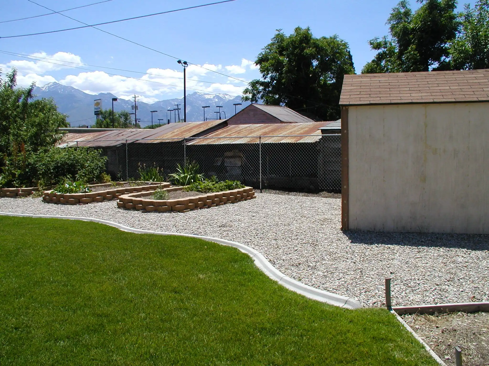
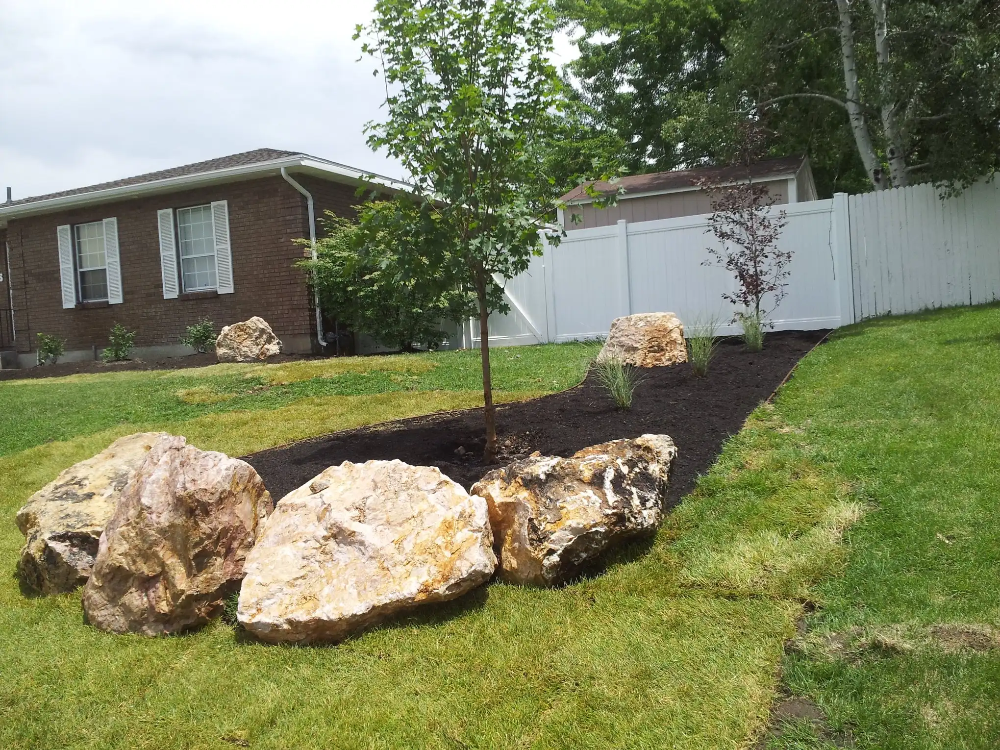
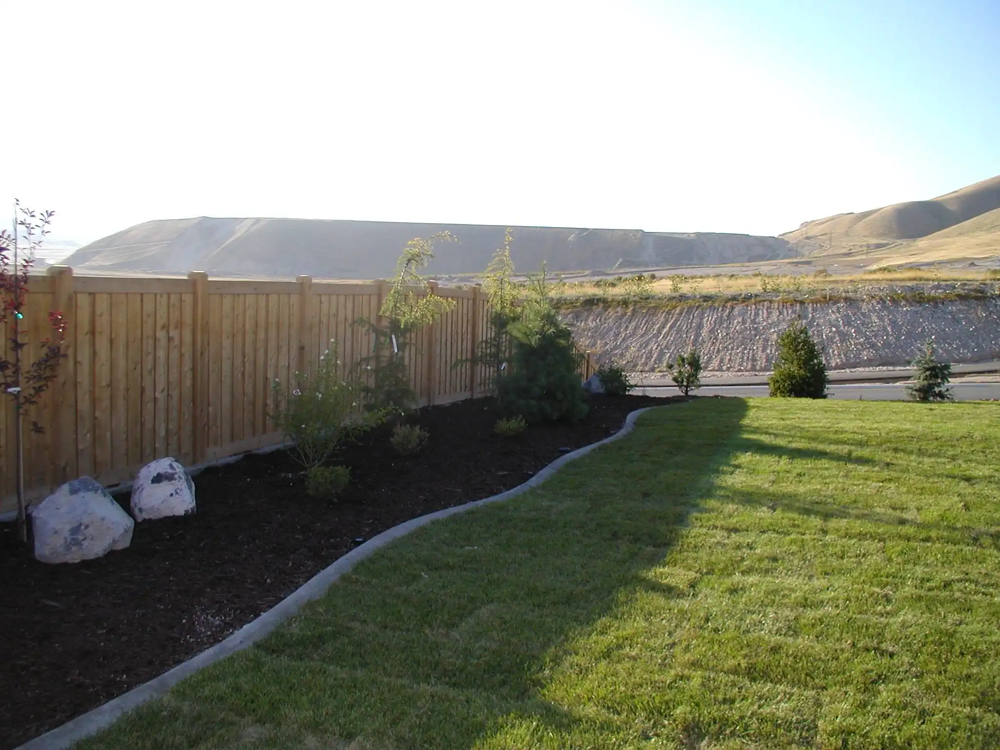
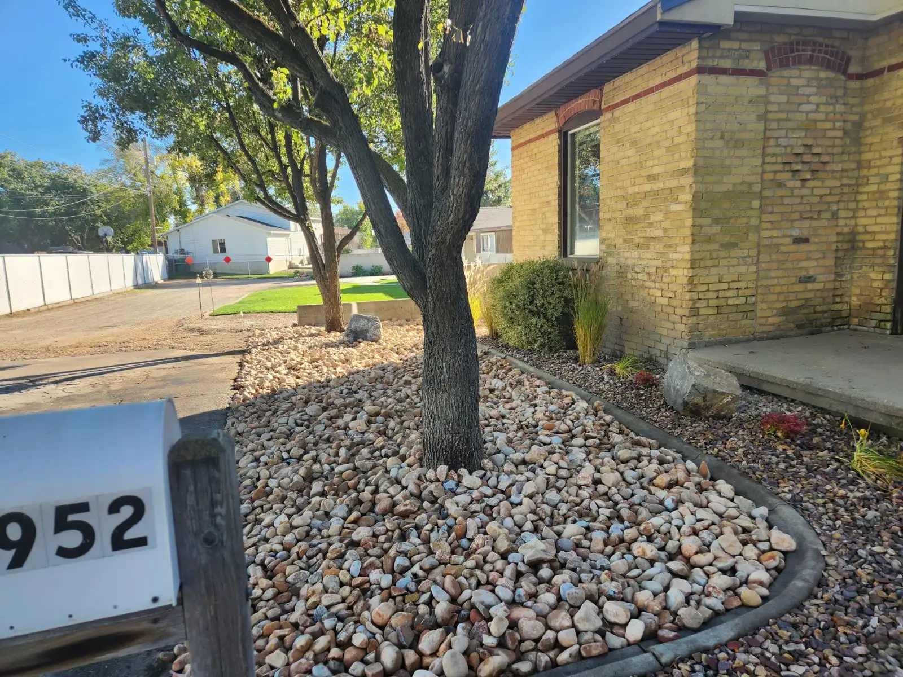
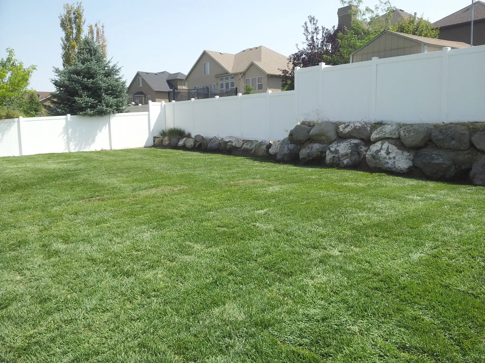
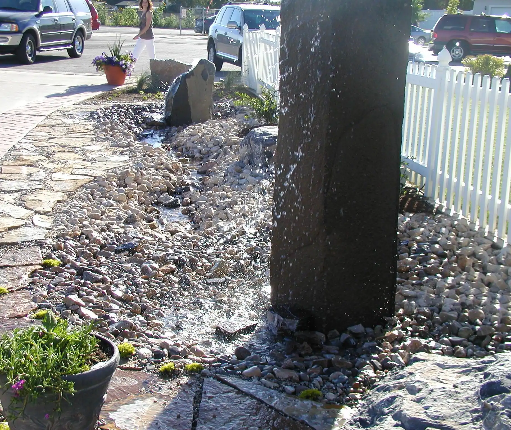
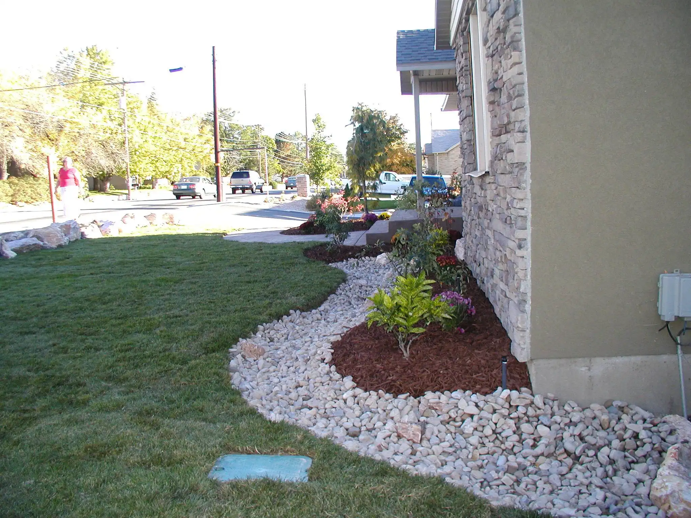
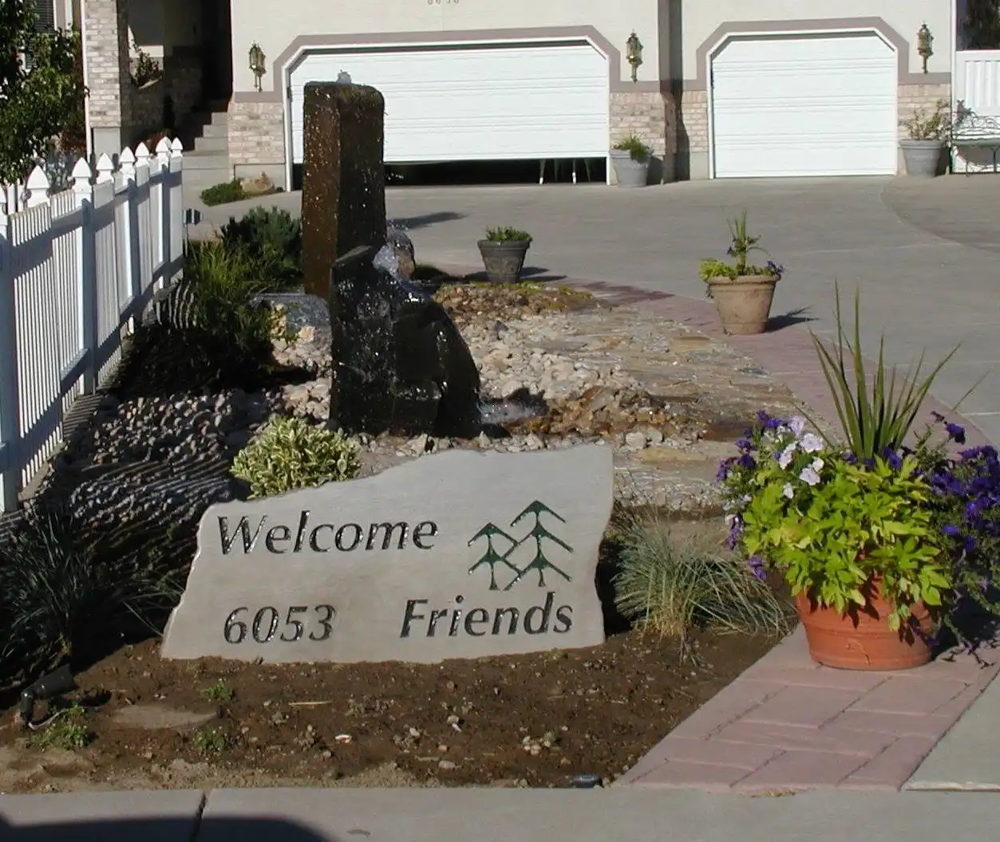

A few of our Landscaping Projects

Create areas for garden beds with irrigation drip system, with gravel for clean and natural look.

Designed a small boulder feature with a minimalist look.

Full backyard install with sprinkler system, boulders, and plants to finish your new home.

Designed a modern yard with drought-resistant plants and decorative stones.

Built a Rock wall, with sprinkler system and sod for family gatherings.

Installed a stunning water feature with surrounding greenery for a peaceful retreat.

No matter what vision you have, we can help you.

Welcome anyone with style, bring peace to your home.